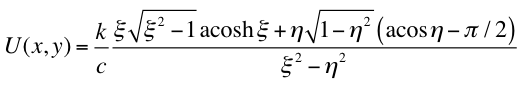
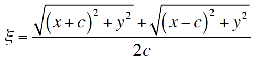
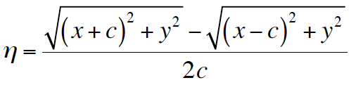
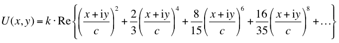

label: NLLENS, KNLL=real, CNLL=real;The NLLENS element represents a thin nonlinear lens with the potential of 'Elliptic' type as specified in [1]. The lens is used to create fully integrable 2D nonlinear accelerator lattice with very large nonlinear tune spread/shift. The NLLENS element is recognized by the thin tracking module. The quadrupole term of the potential is included in the TRANSPORT map and, consequently, effects the calculation of tunes and Twiss functions.
The scalar potential function of the element is given by

where ,
,
and k = KNLL, c = CNLL.
Figure below shows the contour plot of the scalar potential:
The multipole expansion of the scalar potential is

Note that this expansion is only valid inside the r=c circle on the x,y plane.
In order to create integrable optics, one needs to shape the potential along z axis according to the beta-function. Below is an example nonlinear section representing the necessary nonlinear field with 20 thin lenses:
mu0=0.3; ! phase advance over straight section
l0=2.0; ! length of the straight section
nn=20; !number of nonlinear elements
tn=0.45; ! strength of nonlinear lens
cn=0.01; ! dimentional parameter of nonlinear lens
musect=mu0+0.5;
f0=l0/4.0*(1.0+1.0/tan(pi*mu0)^2);
betae=l0/sqrt(1.0-(1.0-l0/2.0/f0)^2);
alfae=l0/2.0/f0/sqrt(1.0-(1.0-l0/2.0/f0)^2);
betas=l0*(1-l0/4.0/f0)/sqrt(1.0-(1.0-l0/2.0/f0)^2);
value,f0,betae,alfae,betas;
ncreate(ii,kk,cc): macro = {n.ii: nllens, knll=kk, cnll=cc;};
i=0;
while(i < nn)
{
i=i+1;
sn=l0/nn*(i-0.5);
bn=l0*(1-sn*(l0-sn)/l0/f0)/sqrt(1.0-(1.0-l0/2.0/f0)^2);
knn=l0*tn*cn^2/nn/bn;
cnn=cn*sqrt(bn);
exec,ncreate($i,knn,cnn);
value,i,bn,cnn,knn;
};
References: